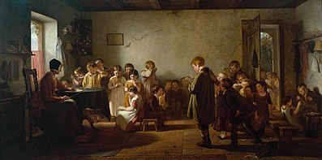
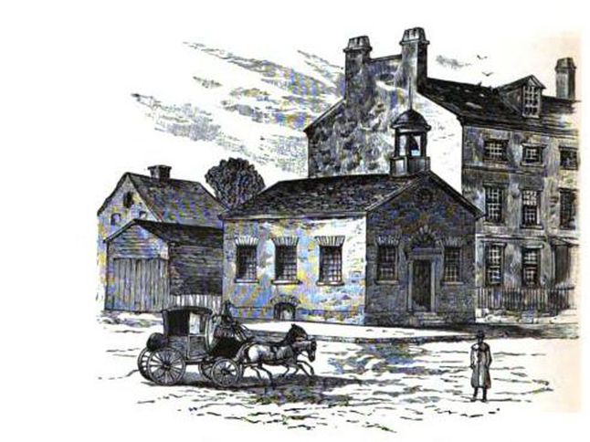

<!DOCTYPE html>
<html></html>
    <head>
        <meta charset="utf-8">
        <meta name="viewport" content="width=device-width, initial-scale=1">
    </head>
    <body style="background-color:#ffa1a1">
        <title>
            EXTRA. CREDIT. PLS.
        </title>
        <h1>EDUCATION REFORMS</h1> <br> <br>
        <h2>
            In the 1800s, most families didn't have the access to the education system as either<br>
            they are poor or live in another state other than Massachusetts. Wealthy families hence <br>
            had more advantages. Education was mandatory and free in Massachusetts since public <br>
            schooling was common in England. A typical class would consist of students ranging from <br>
            ages 5 to 12. A typical school year would last only six months because children had to <br>
            work for the rest of their free time. On the other hand, public schools are rare in the <br>
            South, so the majority of  families educate their children at home themselves without a tutor. <br>
             <br>
            <h3>
                Thomas George Webster, A <i>Dame's School</i>
            </h3>
            <h2>
            <br>
            Later around the mid 1800s, the idea of a tax-funded school was proposed whereby property <br>
            taxes would be funded by locals.This was suggested by an American Educator, Horace Mann. <br>
            He believed that every child deserves a basic education with well-trained teachers. He equalized <br>
            it by making it nonsectarian and regardless of status as well as background for children. Because <br>
            of his effort, all states had a free public school system by the 1870s.<br>
            </h2>
             <br>
            <h3>Boston Latin School, both the oldest public school in the British America and the oldest <br>
                existing school in the United States. This school is still in operation today.
            </h3>
            <h2>
            Others such as Mary Lyons and Emma Willard also took part by establishing colleges and higher <br>
            education. Both established female seminaries. The two of them expanded public education by preaching <br>
            women with an education comparable to that of college-educated young men. Both the funded-school and <br>
            college were considered to be basic education.<br>
            <br>
            Public education today is still similar to those in the past. It is affordable by everyone and funded <br>
            by the states through tax. Children are still put into learning groups regarding their age. <br>
            However, college education is becoming unaffordable for some people. Not being able to attend college <br>
            due to debt and expenses can in turn limit a person’s life choices
        </h2>

        </h2>
        </div>
    </body>
</html>


